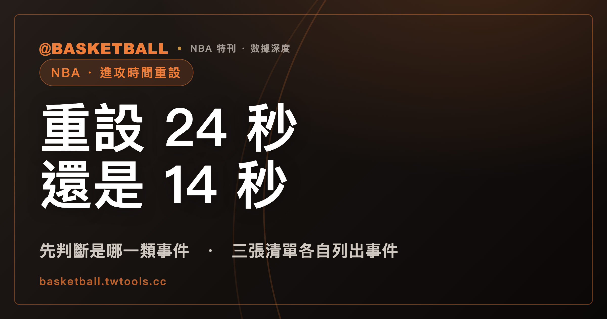

進攻時間會重設成 24 秒還是 14 秒？先判斷發生的是哪一類事件
依 NBA 2025-26 官方規則書 Rule 7，進攻時間計時器（shot clock）重設成 24 秒、重設成 14 秒、不重設，是三張各自列出事件的清單。判斷時先看事件屬於哪一類，再看球權是否換人、發球在前場還是後場；單看球有沒有碰到籃框，並不足以決定。

新手村｜規則入門・進攻時間重設
看 NBA 比賽時，進攻時間的計時器預設每次控球有 24 秒可以出手，但有些時刻，畫面上的數字回到的是 14 秒，不是 24 秒。什麼事件讓它回到 24 秒、什麼事件只回到 14 秒、什麼事件不重設？NBA 2025-26 官方規則書的 Rule 7（章名為 Shot Clock）把這些寫成幾張清單。
本文的讀法是：先看發生的事件屬於哪一張清單，再看球權有沒有換人、發球在前場還是後場。單看球有沒有碰到籃框，並不足以決定結果，後面的章節會逐項對照條文。這是本文對條文結構的讀法，規則書自己沒有寫「先看事件類型」這句話。24 秒違例本身怎麼定義、怎麼判，本站的違例與犯規有什麼不同已經說明，本文不重複。
先交代幾個用詞。「重設成 14 秒」「碰框」「進攻籃板」「前場發球、後場發球」是中文的慣稱或轉述，規則書的英文原文是 reset to 14 seconds、contacts the basket ring、inbounds the ball in the frontcourt／backcourt，其中 Rule 7 並沒有使用「進攻籃板」一詞。「進攻時間」是站內既有的說法，規則書寫的是 shot clock。本文引用的是 NBA 2025-26 版規則書，新賽季規則書若有修訂，內容可能不同。
讀完之後，你應該能拿一個假設的情境，自己判斷計時器落在哪張清單、會是 24 秒、14 秒還是不重設。
計時器預設從 24 秒起算，哪些事件讓它重設成 24 秒？
依 NBA 2025-26 規則書 Rule 7 第 I 節，計時器預設從 24 秒起算，Rule 7 另有規定的情形除外。Rule 7 §IV(c) 的標題句是「以下情形發生時，計時器重設為 24 秒」，其中列有下面這些事件：
| 事件 | 規則書條次（NBA 2025-26） |
|---|---|
| 球權由一隊換到另一隊 | Rule 7 §IV(c)(1) |
| 後場發球時發生個人犯規 | Rule 7 §IV(c)(2) |
| 後場發球時發生違例 | Rule 7 §IV(c)(3) |
| 跳球，且不是防守方造成的持球（held ball） | Rule 7 §IV(c)(4) |
| 所有 flagrant 與 punching 犯規 | Rule 7 §IV(c)(5) |
這張表可以分成兩種讀法。第一種是看球權：球權換人，依 §IV(c)(1) 是 24 秒。第二種是看事件本身：後場發球時的犯規或違例、不是防守方造成的跳球、flagrant 與 punching 犯規，依 §IV(c)(2) 到 (5) 直接列在這張清單裡，條文的措辭裡沒有另外寫球權歸誰。
flagrant 犯規怎麼分級、什麼情形會被判，可以看本站的技術犯規與惡意犯規入門。這裡要記的只有一件事：依 NBA 2025-26 規則書 Rule 7 §IV(c)(5)，所有 flagrant 與 punching 犯規之後，計時器重設成 24 秒。
跳球這一項值得多看一眼。依 Rule 7 §IV(c)(4)，不是防守方造成持球的跳球，重設成 24 秒。而 Rule 7 §IV(b)(6) 把「防守方造成持球的跳球」列在另一張清單，也就是不重設清單。同樣叫跳球，依起因分在兩張清單，讀跳球情形時要先確認持球是誰造成的。
未進的罰球或碰框未進的投籃之後，進攻方先拿到球，會重設成 14 秒嗎？
會，但條件寫得很具體。依 NBA 2025-26 規則書 Rule 7 §IV(d)，標題句是「以下情形發生時，計時器重設為 14 秒」，其中的第一項是：進攻方在未進的罰球（球仍在場內）或碰到籃框的未進投籃之後，第一個拿到球（§IV(d)(1)）。
球迷口語常把這個情境叫作搶到進攻籃板，「14 秒重置」「半場重置」也是俗稱。規則書沒有用這些詞，條文寫的是「進攻方第一個取得球」。
同一節本文引用的還有兩種相關情形，都限定在「緊接在上述未進罰球或碰框未進投籃之後」的那段過程：
- 防守方犯鬆球犯規（loose ball foul），而且犯規的結果是進攻方在前場發球（§IV(d)(2)）。
- 球出界，而進攻方保有球權（§IV(d)(3)）。
把 §IV(d)(1) 與前一節的 §IV(c)(1) 放在一起看，會發現同一次碰框未進的投籃，之後由誰先拿到球，落在不同的清單：進攻方先拿到，依 §IV(d)(1) 是 14 秒；球權換到對手，依 §IV(c)(1) 是 24 秒。這是把兩條條文並列後的讀法，條文本身並沒有寫成一組對照。
還有一句補充的定義。依 Rule 7 §IV(d) 末段，只在 §IV(d) 的用法裡，「碰到籃框的未進投籃」也包含任何從場上打到持球方籃框的活球。換句話說，在這一節裡，「碰框」的範圍寫得比一般投籃寬，別把它套到 Rule 7 其他地方。
投籃沒碰到籃框，計時器會重設嗎？
依 NBA 2025-26 規則書 Rule 7 §IV(b)，標題句是「計時器在以下情形不重設」，其中一項就是投籃嘗試沒有碰到籃框（§IV(b)(5)）。
這條和規則書對合法投籃的定義互相呼應。依 Rule 7 §II(d)(2)，合法的投籃嘗試須符合的條件之一，是球離手後碰到籃框（另有須在計時器到期前離手的條件）。至於「球卡在籃框與籃板之間」對計時器怎麼處理，本文引用的 Rule 7 條文沒有寫，這裡不做任何推測。
同一張不重設清單裡，還有另外幾項：
| 事件 | 規則書條次（NBA 2025-26） |
|---|---|
| 防守球員是球出界前、或球從下方進入籃框前，最後一個碰到球的人 | Rule 7 §IV(b)(1) |
| 進攻方的技術犯規或 delay-of-game 警告 | Rule 7 §IV(b)(2) |
| 投籃嘗試沒有碰到籃框 | Rule 7 §IV(b)(5) |
| 防守方造成持球的跳球 | Rule 7 §IV(b)(6) |
表中略過了 (3) 與 (4)，本文沒有引用它們，並不表示清單只有這幾項。
另外有兩條和碰框相關的條文，也值得記下。依 Rule 7 §II(g)，防守球員碰到球但沒有取得球權，計時器繼續跑。依 Rule 7 §II(f)(1)，球隊的球權在球碰到進攻方籃框時結束（另一種結束的情形是對手取得球權）。這兩條說的是球權與計時器繼續與否，並不是重設成 24 秒或 14 秒的清單，讀的時候要分開。
「碰到籃框」在三處出現，各自扮演不同角色：它是合法投籃的條件之一（§II(d)(2)），是 14 秒清單裡的情境描述（§IV(d)），沒碰到則被列進不重設清單（§IV(b)(5)）。三處各有各的條文，要分開讀。
「維持讀數或 14 秒，取較大者」是什麼意思？
這是第三種結果，既不是 24 秒，也不是固定 14 秒。依 NBA 2025-26 規則書 Rule 7 §IV(e)，標題句是：計時器維持中斷時的讀數，或重設為 14 秒，兩者取較大者。這一節列有下面這些事件：
| 事件 | 規則書條次（NBA 2025-26） |
|---|---|
| 防守方在前場發球時的個人犯規（§IV(d)(2) 的情形除外） | Rule 7 §IV(e)(1) |
| 防守三秒違例 | Rule 7 §IV(e)(2) |
| 防守方的技術犯規或 delay-of-game 警告 | Rule 7 §IV(e)(3) |
「取較大者」用一組假設數字來看就清楚。以下是假設，不是真實比賽：
- 假設 §IV(e) 列的事件發生時，計時器停在 18 秒。18 比 14 大，依條文，讀數維持 18 秒。
- 假設同一類事件發生時，計時器停在 9 秒。14 比 9 大，依條文，重設為 14 秒。
留意兩個細節。第一，§IV(e)(1) 的括號寫明，§IV(d)(2) 的情形是例外：緊接在未進罰球或碰框未進投籃之後，防守方犯鬆球犯規且進攻方在前場發球，依 §IV(d)(2) 走的是固定 14 秒，不是這一節的「取較大者」。第二，同樣是技術犯規，進攻方的技術犯規與 delay-of-game 警告在 §IV(b)(2) 的不重設清單，防守方的則在 §IV(e)(3)。要判斷技術犯規之後的計時器，先確認是哪一方被判。
某節剩 24 秒或更少時，換球權之後計時器還會運作嗎？
依 NBA 2025-26 規則書 Rule 7 §II(i)：如果某一節剩下的比賽時間是 24 秒或更少，換球權之後，計時器不運作（shall not function）；但 §IV(d) 描述的情形發生時，計時器重新啟用並重設為 14 秒。
這條是前面各節的一個例外門檻，讀的時候有兩個要點。門檻看的是「這一節剩下的比賽時間」，不是計時器上的讀數。被關掉的情形是「換球權之後」，§IV(d) 的情形則明文拉回 14 秒。
FIBA 2024 也有 24 秒與 14 秒，寫法和 NBA 對得上嗎？
FIBA 也有 24 秒與 14 秒的重設。以下是依 FIBA 2024 官方規則（Article 29 與 Article 50）的內容，適用範圍是 FIBA 規則，不是 NBA：
- 控制球的球隊必須在 24 秒內出手投籃（Article 29.1.1）。
- 球碰到對方籃框後，若對方球隊取得控制球，計時器重設為 24 秒；若重新取得控制球的是碰框前控制球的同一隊，重設為 14 秒（Article 29.2.7）。
- 球權判給原控球隊、在前場發球的情形（Article 29.2.2）：停止時計時器顯示 14 秒或以上，不重設，接續原讀數；顯示 13 秒或以下，重設為 14 秒。同一條的後場發球情形，重設為 24 秒。
- 對方球隊因控球方的犯規或違例（含球出界）獲得發球，前場發球時重設為 14 秒（Article 29.2.3）。
- 控球隊的技術犯規之後，計時器不重設，接續原讀數（Article 29.2.4）。
- 因違反體育精神犯規或取消資格犯規的罰則，獲得前場發球線發球時，重設為 14 秒（Article 29.2.6）。
把 NBA 與 FIBA 的條文並列，本文有三點讀法，都是編輯的比較，不是任一份規則書自己寫的對照：
- 碰框之後由誰取得球：NBA 進攻方先拿到球是 14 秒（§IV(d)(1)），換球權是 24 秒（§IV(c)(1)）；FIBA 同一隊取回是 14 秒，對方取得是 24 秒（29.2.7）。兩邊的分法在這個情境上可以並列，但措辭各自不同。
- 關閉計時器的門檻：NBA 是某節剩 24 秒或更少、換球權之後不運作（§II(i)）。FIBA Article 50.5 則是球死且比賽時鐘停止、任一隊新取得控制球、比賽時鐘少於 14 秒時關閉計時器。兩個門檻各有各的條文，數字不同，觸發措辭也不同，不能視為同一條規則的兩種寫法。
- 前場發球的接續或 14 秒：NBA 的「維持讀數或 14 秒取較大者」（§IV(e)）與 FIBA 29.2.2 的「14 秒或以上接續、13 秒或以下重設為 14 秒」，在結果上看起來相近，但兩份條文列的事件範圍各自不同，並列時要逐一情形核對，不能寫成兩者相同。
FIBA 2024 對照的是 2024 版的條文。本文沒有取得 FIBA 官方網站版本，只用本機規則書快照，讀者若要引用，請以官方發布的現行版本為準。
拿一個假設的情境，自己判斷計時器落在哪一張清單
下面的情境全部是假設，用來練習判斷，不是任何真實比賽。依 NBA 2025-26 規則書 Rule 7，判斷順序是：先問事件屬於哪類，再問球權有沒有換人、發球在前場還是後場。
| 假設情境 | 落在哪一張清單 | 條次（NBA 2025-26） |
|---|---|---|
| 甲隊投籃碰框未進，之後甲隊球員第一個拿到球 | 重設 14 秒 | §IV(d)(1) |
| 甲隊投籃碰框未進，之後球權換到乙隊 | 重設 24 秒 | §IV(c)(1) |
| 甲隊投籃沒有碰到籃框 | 不重設 | §IV(b)(5) |
| 後場發球時，判了一次個人犯規 | 重設 24 秒 | §IV(c)(2) |
| 判了一次 flagrant 犯規 | 重設 24 秒 | §IV(c)(5) |
| 防守方在前場發球時被判個人犯規，而且不屬於緊接未進投籃後的鬆球犯規 | 維持讀數或 14 秒取較大者 | §IV(e)(1) |
| 進攻方被判技術犯規 | 不重設 | §IV(b)(2) |
| 防守方被判防守三秒違例 | 維持讀數或 14 秒取較大者 | §IV(e)(2) |
做完這張表，可以再多做一步：如果情境剛好落在某節剩 24 秒或更少的時間，先看 §II(i)。換球權之後計時器不運作，只有 §IV(d) 的情形會讓它重新啟用並重設為 14 秒。
以下是編輯的讀法，不是官方規定：拿到一個情境，先在規則書 Rule 7 §IV(b)、(c)、(d)、(e) 四張清單裡找事件；找到之後，才決定球權與發球位置這兩個條件是否要繼續往下問。下次看比賽，可以挑一次投籃碰框未進的回合，自己判斷這次會落在哪一格。
常見問題
進攻方拿到未進投籃的球，計時器會是 14 秒嗎？
要看條件。依 NBA 2025-26 規則書 Rule 7 §IV(d)(1)，進攻方在未進的罰球（球仍在場內）或碰到籃框的未進投籃之後，第一個拿到球，重設為 14 秒。球權若換到對手，依 §IV(c)(1) 是 24 秒；投籃沒有碰到籃框，依 §IV(b)(5) 不重設。若那一節剩 24 秒或更少，依 §II(i)，換球權之後計時器不運作，§IV(d) 的情形則重新啟用並重設為 14 秒。以上是 NBA 2025-26 版，新賽季規則書若修訂，內容可能不同。
flagrant 犯規之後，計時器會重設成多少？
依 NBA 2025-26 規則書 Rule 7 §IV(c)(5)，所有 flagrant 與 punching 犯規之後，計時器重設為 24 秒。技術犯規則不是同一張清單：進攻方的技術犯規與 delay-of-game 警告，依 §IV(b)(2) 不重設；防守方的，依 §IV(e)(3) 是維持讀數或 14 秒取較大者。這些都是 NBA 2025-26 規則書的條文，並不是 FIBA 的規定。
「維持讀數或 14 秒，取較大者」是什麼意思？
依 NBA 2025-26 規則書 Rule 7 §IV(e)，遇到該節列出的事件（例如防守三秒違例），計時器維持中斷時的讀數，或重設為 14 秒，兩者取較大者。以下是假設的數字：讀數 18 秒時維持 18 秒，讀數 9 秒時重設為 14 秒。§IV(d)(2) 的鬆球犯規情形是例外，走固定 14 秒。這是 NBA 2025-26 版的條文，FIBA 2024 的寫法不同，不能直接套用。
FIBA 2024 碰框後同一隊取回球，也是 14 秒嗎？
依 FIBA 2024 官方規則 Article 29.2.7，球碰到籃框之後，重新取得控制球的若是碰框前控制球的同一隊，重設為 14 秒；對方球隊取得控制球，則重設為 24 秒。這是 FIBA 2024 版的條文，並不是 NBA 的規定。NBA 2025-26 的對應條文寫成 Rule 7 §IV(d)(1) 與 §IV(c)(1)，措辭與適用情形範圍各自不同。
資料來源
- NBA Official Playing Rules 2025-26，Rule No. 7 Shot Clock（§I、§II(d)、§II(f)、§II(g)、§II(i)、§IV(b)、§IV(c)、§IV(d)、§IV(e)）：本機快照的官方規則書 PDF 文字檔，取得日期 2026 年 9 月 29 日，無可點擊網址。
- NBA 官網 Rule 7 頁（頁面標示 2025-26 NBA Rulebook，2026 年 9 月 29 日抓取，用於與規則書 PDF 對照 §I、§II(i)、§IV(c)、§IV(d)）：official.nba.com/rule-no-7-24-second-clock/
- FIBA Official Basketball Rules 2024（October 2024 版，Article 29、Article 50）：本機快照的官方規則書文字檔，取得日期 2026 年 9 月 29 日，無可點擊網址。